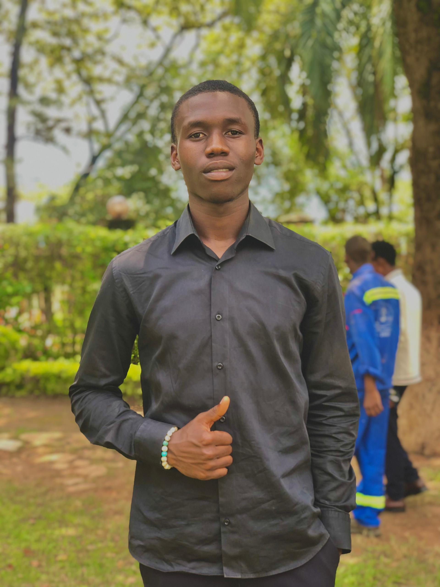

A propos de moi
Bnjour je m'appel donel MBIYA, Etudiant motivé en informatique à l'UDBL au cours des mes etudes j'ai developper des solides competences en programmation
Passionné par le developpement web, l'intelligenc artificielle, et le design graphique je suis constament à la recherche de nouvelles oportunité et d'apprentissage
| catégorie | compétences | niveau |
|---|---|---|
| programmation | html, CSS, javascript, python | Avancé |
| design | Figma, photoshop, (basse) | intermediaire |
| langues | français(natif), anglais(fluides) | Avancé |
| Outils | git, VS code, Suite office | Avancé |
| Soft skills | commuication, Résolution des probèmes, Autonomie | Expert |